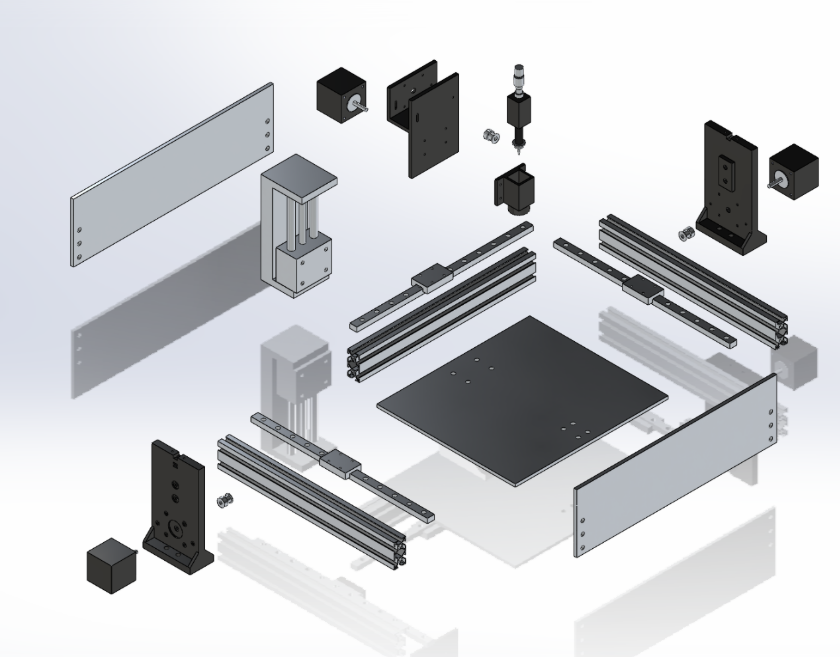
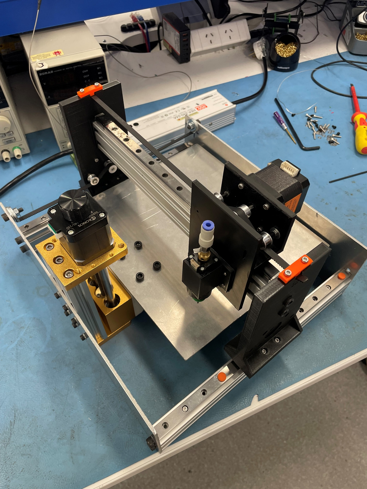

Automation / Mechatronics Design
Pick-and-Place CNC
A five-person team built a working pick-and-place CNC machine for about $130, the kind of machine that normally costs thousands and is too complex for a home workshop. We designed and built it from scratch: the frame, the three-axis motion system, and the nozzle assembly designed to place PCB components. The brief was something a hobbyist could assemble at home without specialist tools.
The brief
- Targeted electronics hobbyists who find commercial pick-and-place machines too expensive and too complex to set up
- Capped cost under $200, base under 300 x 300mm, with assembly under two hours and every part sourced off the shelf or 3D printed

My part
- Built the belt-end securing and tensioning across the X and Y drives
- Traced a binding fault during assembly to belt alignment
- Ran much of the assembly and disassembly, which the brief set as a timed spec

Result
Built for $128.85, well under the $200 target ($21.60 excluding the provided university kit).
- Assembled in one hour against a two-hour target
- Positioned within 0.3mm against a 0.2mm goal
- Frame deflection under 0.01mm, noise under 80dB
- Validated by running G-code motion tests across all three axes
Learned
Two things only showed up once the machine was physically together and running. A binding fault that looked fine in CAD came down to belt alignment. Driving the gantry from one side left the far rail to lag and settle on every move, flex and play that does not show on a model. CAD tells you what should happen. Running the hardware tells you what actually does.
Status: full-sized prototype, built and motion-tested.
← Back to projects